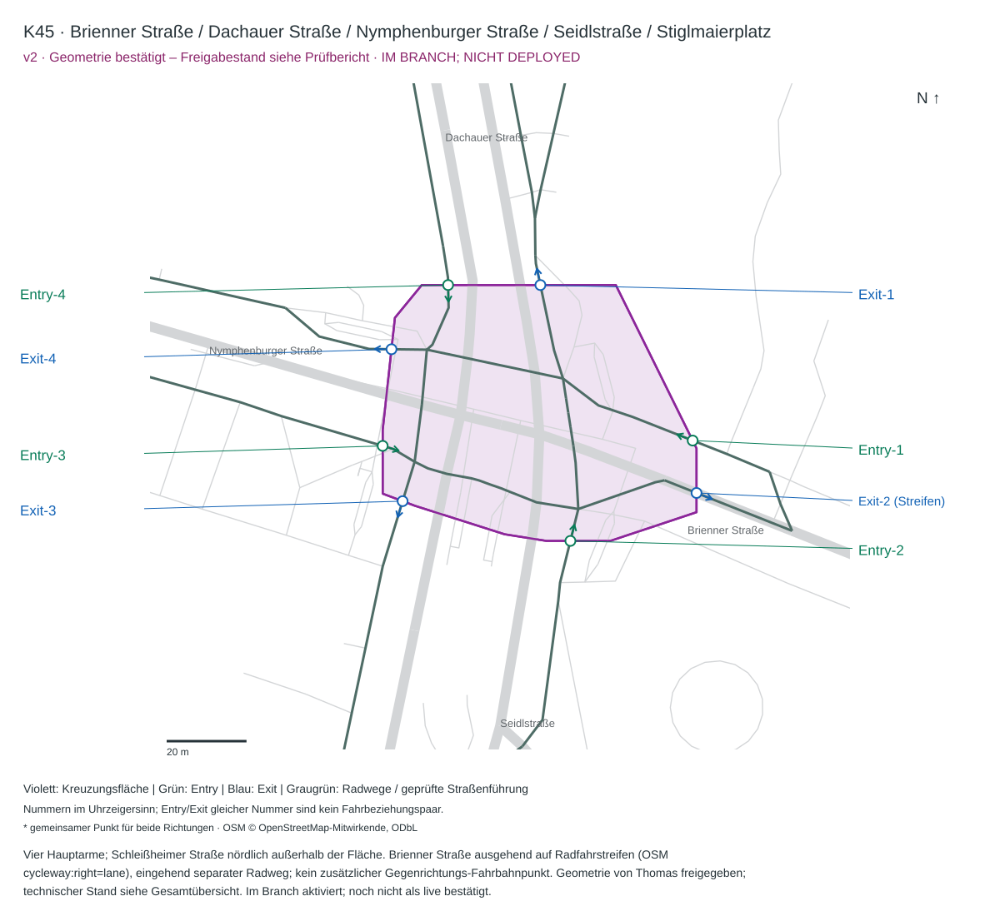

K42–K46 · Zentrale Kreuzungen
5 Geometrien freigegeben, 0 noch zur Sichtprüfung offen. Technischer Stand und Live-Status siehe Gesamtübersicht. Die fünf von Thomas ausgewählten Kreuzungen. Bitte Umfang der Fläche, Entry-/Exit-Punkte, Fahrtrichtung und fehlende Anschlüsse prüfen. Benachbarte Einmündungen bleiben außerhalb. Radfahrstreifen werden anhand ihrer OSM-Fahrbahnmitte dargestellt; die seitliche Lage ist nicht vermessen. Eine Geometriefreigabe ist noch keine Aktivierung; Fahrbeziehungsprüfung und Live-Status werden getrennt dokumentiert.
Gesamtübersicht · Kontaktübersicht
K42 v1 · Anzinger Straße / Aschheimer Straße / Bad-Schachener-Straße / Melusinenstraße
9 ausgehende Kfz-Fahrspuren laut OSM. Geometrie von Thomas freigegeben; technischer Stand siehe Gesamtübersicht. Im Branch aktiviert; noch nicht als live bestätigt.

K43 v1 · Chiemgaustraße / Schwanseestraße
8 ausgehende Kfz-Fahrspuren laut OSM. Geometrie von Thomas freigegeben; technischer Stand siehe Gesamtübersicht. Im Branch aktiviert; noch nicht als live bestätigt.

K44 v2 · Marsstraße / Seidlstraße
Radfahrstreifen Marsstraße West und Seidlstraße Nord/Süd einbezogen. Marsstraße Ost mit separaten Radwegen. Fahrbahnpunkte auf OSM-Mittellinie; seitliche Lage nicht vermessen. Denisstraße bleibt außerhalb. Geometrie von Thomas freigegeben; technischer Stand siehe Gesamtübersicht. Im Branch aktiviert; noch nicht als live bestätigt.

K45 v2 · Brienner Straße / Dachauer Straße / Nymphenburger Straße / Seidlstraße / Stiglmaierplatz
Vier Hauptarme; Schleißheimer Straße nördlich außerhalb der Fläche. Brienner Straße ausgehend auf Radfahrstreifen (OSM cycleway:right=lane), eingehend separater Radweg; kein zusätzlicher Gegenrichtungs-Fahrbahnpunkt. Geometrie von Thomas freigegeben; technischer Stand siehe Gesamtübersicht. Im Branch aktiviert; noch nicht als live bestätigt.

K46 v2 · Orleansstraße / Rosenheimer Straße
Radfahrstreifen Rosenheimer Straße Nordwest und Schutzstreifen Orleansstraße Südwest einbezogen (beidseitig; gemeinsamer Entry/Exit auf OSM-Mittellinie). Aus Südost bestehen Radweg und zusätzliche Fahrbahnzufahrt mit Radfahrstreifen; Geometrie von Thomas freigegeben. Entry-1 (Radweg) nur rechts nach Exit-1; links nach Exit-3 und geradeaus nach Exit-4 ausgeschlossen. Technischer Stand siehe Gesamtübersicht, im Branch aktiviert; noch nicht als live bestätigt.

OSM 2026-11-17 · © OpenStreetMap-Mitwirkende, ODbL.